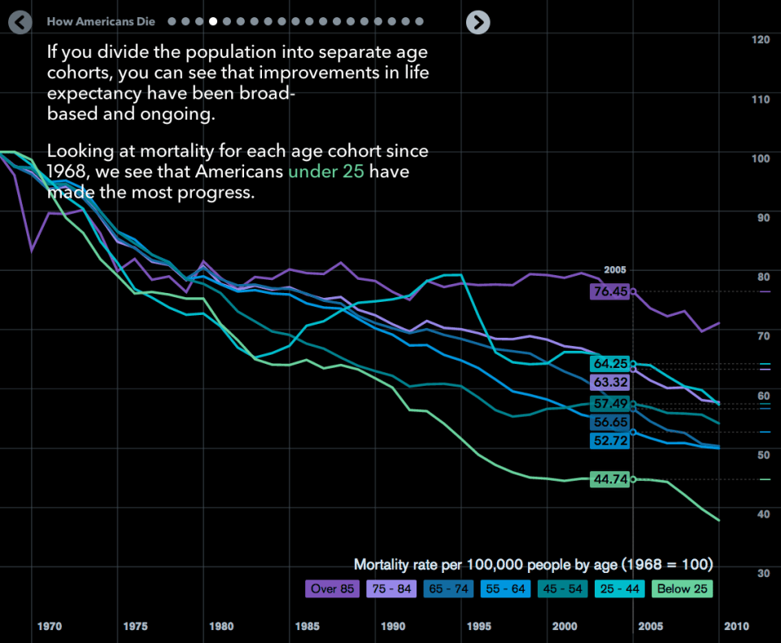

Mortality in America
The following data-driven visualization shows the trend of mortality rate in the US since 1968 (to 2010).
This visualization is of interest for several reasons:
-
With its simple, yet intuitive plotting of the three variables, viz., time, count (per 100,000), and age group,
it is easy to analyze the -
- Contrast between different age groups.
- Overall trend in mortality.
- Anomalies (further discussed below).
- Related issues and solutions that explain the trend.
- Expedient use of colors and gradients to depict the different elements are lucid and make the visualization both coherent and appealing.
- The actual graph is interactive and shows more details, as highlighted for year 2005, using the mouse cursor.
- Is a part of a slide-deck which is a commendable example of efficient story telling using data visualization (link below).
-
Questions around anomalies, eg. surge in the mortality rate of 25-44 age group between 1990 and 95, are explained in the slide-deck.
- This is a fantastic example of the application of efficient story telling using Visual Data Science.
- Here is an image depicting the reason for this surge.

- Link to the original source on Bloomberg.
(Worth a visit)